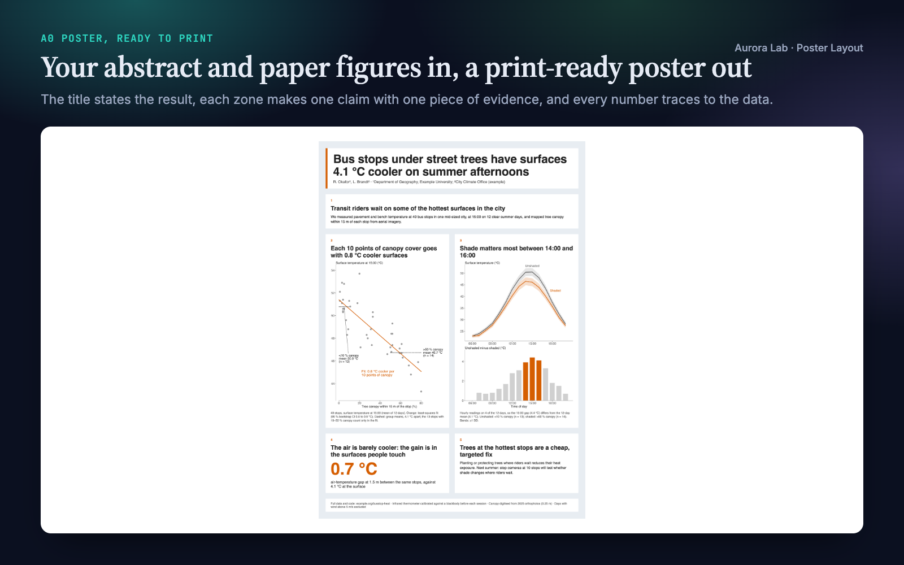
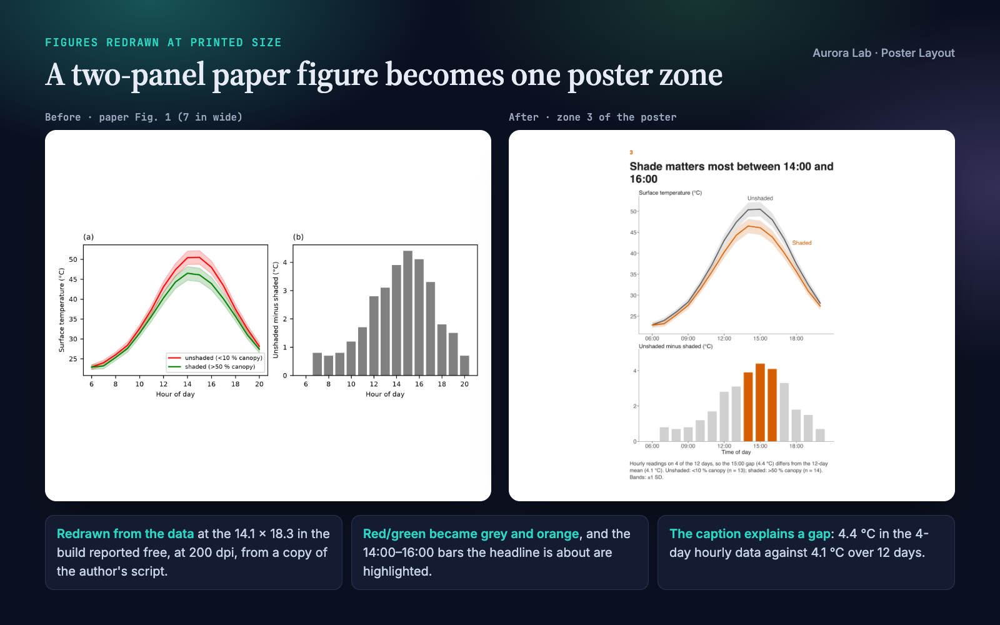
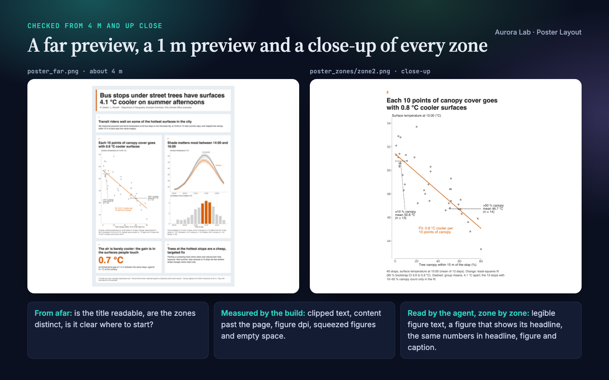
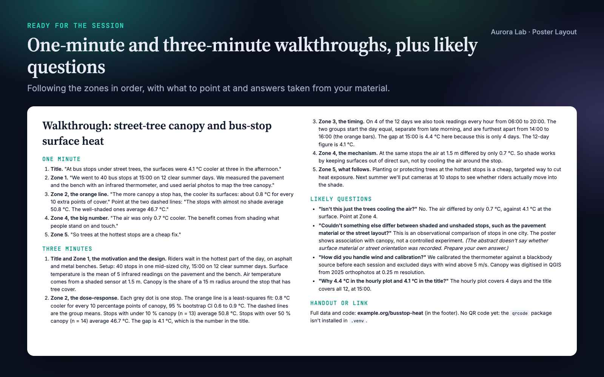
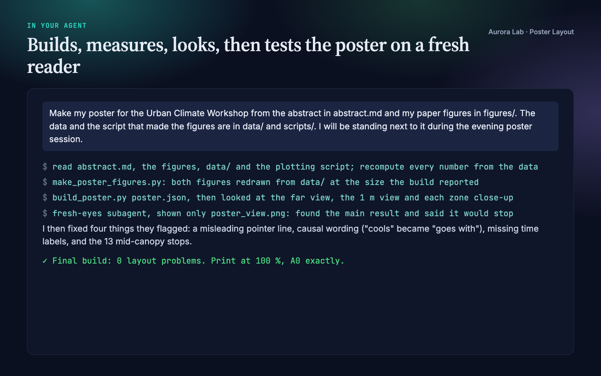

Overview
A poster session is a crowd walking past at one to three metres, deciding in seconds whether to stop. Paper figures shrunk next to paragraphs of text lose them. Poster Layout turns your agent into a careful poster designer that:
- Writes the story before the layout: a title that states the main result with its number, and three to six zones whose headlines each make one claim and, read in order, summarise the study.
- Keeps every number traceable: each value on the poster comes from your figures, results or text, with the same rounding, n and interval. Nothing is invented.
- Redraws your figures at printed size from a copy of your plotting script and your data, at the exact space the build reports for each zone, with poster type sizes and the data each headline is about in one accent colour. Your originals are never touched.
- Builds a one-page PDF at physical size: A0, A1, 36×48 in, 42×56 in or any custom size.
- Measures the layout in a real browser engine and looks at it like a visitor: from about 4 m, from about 1 m, and zone by zone up close. A fresh subagent then sees only the poster image and has to find the main result.
- Prepares the conversation: one-minute and three-minute walkthroughs, likely questions with answers from your material, and the handout link.
Pairs well with Paper Figures, which designs figures from data. Each works on its own.
Quick start
- Get the skill from Agensi and add it to your agent (Claude Code, Codex CLI, Cursor, Gemini CLI or any agent that loads SKILL.md skills).
- Have Python 3.10+ with Pillow (plus matplotlib and numpy to redraw figures) and a Chrome-family browser: see Browser requirement.
- Ask in plain words, pointing at your material.
Example requests:
- "Make an A0 portrait poster for the conference from my figures in figures/ and the abstract in abstract.md."
- "Here is my paper (paper/main.tex) and its figures: turn it into a 36×48 in landscape poster."
- "Review poster/poster.pdf before I send it to print: what would a visitor miss?"
- "My poster's text is cut off and the figures look blurry: fix the layout."
What you get
Everything below comes from a real run: a fresh agent session with only this skill installed, given the request in the session card. The input was ours: a synthetic, seeded study of street-tree shade at 40 bus stops (an abstract, two paper figures at journal size, one of them saved at only 150 dpi, the CSV data and the plotting script). The run recomputed every number from the data, redrew both figures from a copy of the script at the size the build reported, built the A0 poster, checked the previews and zone close-ups, ran the fresh-eyes test and fixed four things it flagged, and wrote the walkthrough. Every number on the poster matches the data.





How it works
- Facts. Venue size and orientation, audience, and your material. If nobody knows the size, it uses A0 portrait and says so.
- Story. The title states the main result; three to six zone headlines each make one claim. Read alone, in order, title and headlines must summarise the study.
- Evidence. One figure, big number, diagram or photo per zone; one panel of a multi-panel paper figure rather than all of them.
- First build. A short JSON spec becomes an HTML poster at physical size; the report gives each zone's printed size and the free space for its figure.
- Figures at size. Redrawn from your data at exactly that space with poster type sizes, or, for image-only figures, used as is when they reach 150 dpi and stay legible.
- Measure and look. Every layout problem the build reports is fixed (cut words first, then resize zones, then redraw; type is never shrunk below the minimum). Then the agent looks at the 4 m preview, the 1 m preview and each zone close-up.
- Fresh eyes. A subagent sees only the poster image: what is the main result, which part shows it, would you stop, what would you ask?
- Conversation. One- and three-minute walkthroughs, likely questions, the handout link or QR code.
- Delivery. The files, how to print (100 %, no "fit to page"), assumptions, and each number with its source.
What the build measures
| Problem | Flagged when |
|---|---|
| Clipped text | a zone's content runs past its edge |
| Page overflow | content runs past the page; the PDF is not one page |
| Wrong page size | the PDF page differs from the spec's size |
| Long title | the title wraps to three or more lines |
| Low resolution | a raster figure prints under 150 dpi |
| Squeezed figure | text leaves the figure less than 35 % of the zone's height |
| Empty space | a figure fills less than 75 % of its space, or a text zone uses less than half its height |
| Page-sized text | a figure saved for a page will print its text under 24 pt |
The content lint adds zone count, headline length, words per zone and in total, and missing images. What a script cannot see (legibility inside figures, whether a figure shows its headline's claim, whether the numbers agree) is the agent's job, from the previews and close-ups.
Browser requirement
The PDF, previews and layout measurements come from a Chrome-family browser run headless on your machine, with a temporary profile and no network access. Any of these works:
| System | Found automatically |
|---|---|
| macOS | Google Chrome, Chromium, Microsoft Edge or Brave Browser in /Applications or ~/Applications |
| Windows | chrome.exe, msedge.exe or brave.exe under Program Files, Program Files (x86) or Local AppData |
| Linux | google-chrome, google-chrome-stable, chromium, chromium-browser, microsoft-edge or brave-browser on PATH |
| Anywhere else | --chrome PATH or the CHROME_PATH environment variable |
Firefox and Safari cannot be driven this way. Without a Chrome-family browser the skill writes the HTML poster and runs the content lint only: open the HTML in any browser and print it to PDF at 100 % (margins none, background graphics on). The previews, close-ups and layout checks need the browser, and the agent tells you it could not check the layout.
Files it reads and writes
| Path | |
|---|---|
| Reads | the abstract, paper, figures, data and plotting scripts you point to; with a research/ folder, research/figures/, research/results/, research/claims.md, research/paper/ |
| Writes | poster/ (or research/poster/): poster.json, redrawn figures and a copy of your plotting script, poster.html, poster.pdf, poster_view.png, poster_far.png, poster_zones/, walkthrough.md |
Your figures, data and scripts are never modified.
Command line and helper API
python poster-layout/scripts/build_poster.py poster/poster.json # HTML, PDF, previews, close-ups, report
python poster-layout/scripts/build_poster.py poster/poster.json --chrome PATH
python poster-layout/scripts/build_poster.py poster/poster.json --no-render # HTML and content lint only
| Helper | Purpose |
|---|---|
build_poster.py |
Spec to HTML, one-page PDF at physical size, 4 m and 1 m previews, per-zone close-ups, and a report of each zone's size, the free space for its figure, effective dpi and layout problems |
poster_style.use() |
matplotlib settings for print: 28 pt text, thick lines, quiet axes, colour-blind-safe series colours |
poster_style.figure(w, h) |
A figure at its printed size in inches (the space the build reports) |
poster_style.label_end(...) |
Name a series at its last point instead of a legend |
poster_style.check(fig) |
List any text that will print under 24 pt |
poster_style.save(fig, path) |
Save at that exact size, 200 dpi (optionally SVG too) |
The spec is plain JSON: size, columns, accent colour, title, authors, logos, row heights, and per zone a headline with text, bullets, a big number, an image and a caption. Zones fill the grid in reading order; colspan, rowspan and row_heights size them. The skill ships a complete synthetic example.
FAQ
What do I need to give it?
Your abstract or paper, your figures, and ideally the data and plotting script behind them so it can redraw the figures at poster size. Tell it the size if you know it.
Will it change my figures or numbers?
No. It redraws from a copy of your script with the same data, fit and intervals, changing only size, type, line weight, colour emphasis and labels. Every number on the poster is traced to your material.
Which sizes does it support?
A0 and A1 in portrait or landscape, 36×48 in, 48×36 in, 42×56 in, or any custom size in mm or inches. The PDF is one page at physical size: print it at 100 %.
Can I edit the poster afterwards?
Yes, through the JSON spec, then rebuild in seconds. It does not produce PowerPoint or LaTeX files.
What if a figure exists only as an image?
It is used as is when it prints at 150 dpi or more and its text is legible in the close-up; otherwise the agent asks you for a vector (SVG) or larger export, or the data. It never redraws a figure from numbers read off an image.
Limitations
- It lays out and checks posters from material you already have; it does not analyse your data beyond recomputing the numbers it puts on the poster.
- One fixed style: a title band, white zones on a light background on a strict grid, one sans-serif font and one accent colour. No institutional PowerPoint or LaTeX templates, and the output is PDF and HTML, not .pptx.
- Rendering needs Chrome, Chromium, Edge or Brave; without one you get the HTML only, with no layout checks.
- PDF figures must be converted to SVG or PNG first.
- Venues differ in size and template rules; check your conference's current poster instructions.
Changelog
1.0.0 · October 2026 · First release.